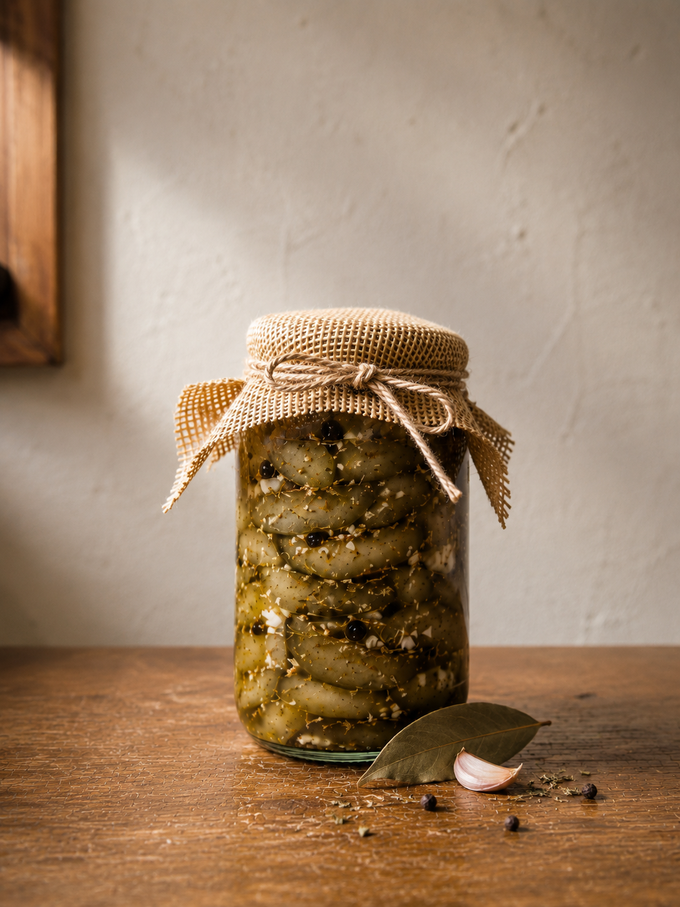
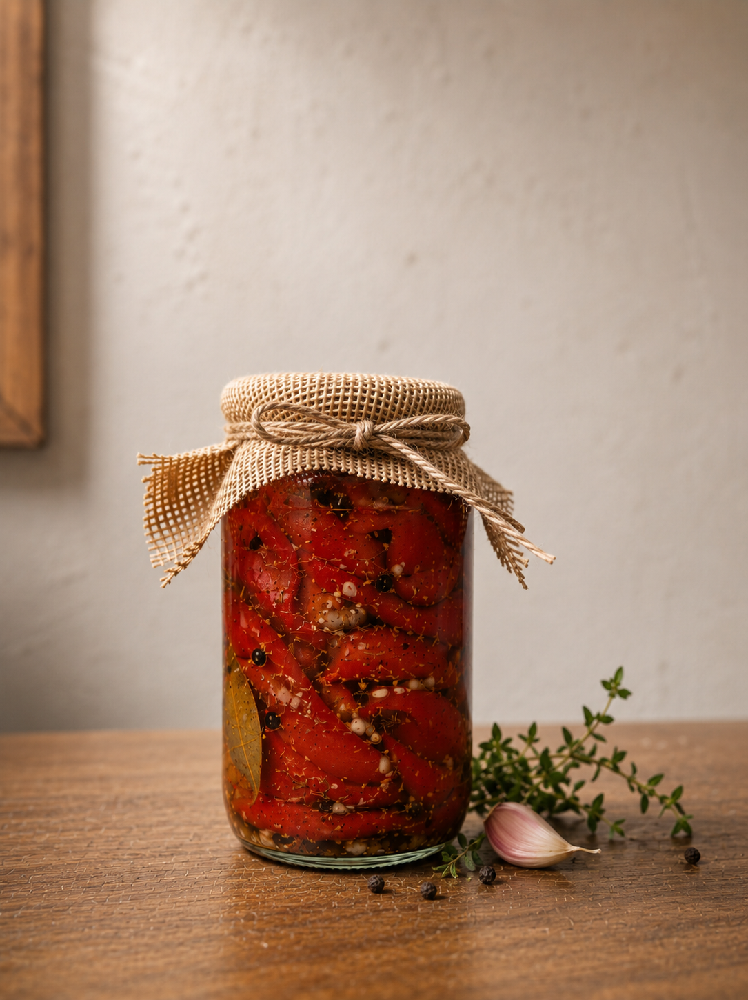

Ingredientes
Se priorizan sabor, textura y presencia para que cada conserva tenga una lectura gastronomica clara.
Conservas gourmet artesanales
Berenjenas y morrones encurtidos para elevar una picada, una comida simple o una propuesta de comercio con sabor autentico y presentacion cuidada.
Pedidos personales y consultas para comercios.
Elaboracion cuidada
La seleccion de ingredientes, la preparacion paciente y el frasco como pieza central construyen una experiencia pensada para consumidores que valoran lo autentico y comercios que buscan productos con identidad propia.
Se priorizan sabor, textura y presencia para que cada conserva tenga una lectura gastronomica clara.
La preparacion cuidada permite sostener una experiencia honesta, cercana y confiable.
El frasco y la identidad visual ayudan a que el producto se vea bien en la mesa y en el comercio.
Nuestros productos
La primera linea de FR Conservas se enfoca en sabores versatiles, faciles de servir y con presencia suficiente para destacar en una mesa o estanteria gourmet.

Elaboradas con aceite, ajo y especias. Ideales para picadas, tablas gourmet y momentos para compartir.
Consultar por WhatsApp
Elaboradas con aceite, ajo y especias. Ideales para picadas, tablas gourmet y momentos para compartir.
Consultar por WhatsAppPreguntas frecuentes
Escribinos por WhatsApp para consultar productos disponibles, precios y forma de entrega o retiro.
Si. FR Conservas recibe consultas de almacenes, dieteticas, delicatessen, restaurantes y revendedores.
La linea principal incluye berenjenas encurtidas y morrones encurtidos. La disponibilidad se confirma por contacto directo.
Si. El contacto por WhatsApp esta pensado para resolver dudas, consultar disponibilidad y coordinar pedidos sin compromiso.
Contacto directo
Escribinos por WhatsApp para conocer productos disponibles, precios y opciones para pedidos personales o comerciales.
Consultar por WhatsApp